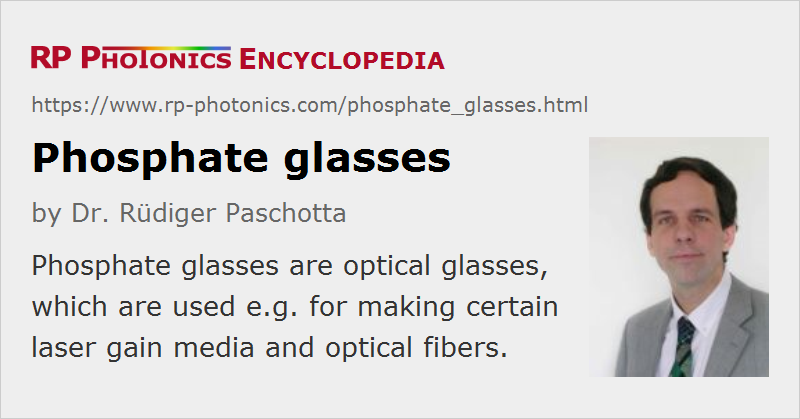

Phosphate Glasses
Definition: certain glasses from which certain optical fibers and laser gain media can be made, for example
More general terms: optical glasses
German: Phosphatgläser
Categories: optical materials, fiber optics and waveguides
How to cite the article; suggest additional literature
Author: Dr. Rüdiger Paschotta
Phosphate glasses are glass materials based on phosphorus pentoxide (P2O5) with some added chemical components. They are used as laser gain media – both in bulk lasers and in the form of optical fibers. One of their primary advantages is their very high solubility for rare earth ions (→ rare-earth-doped gain media) such as erbium (Er3+), ytterbium (Yb3+) and neodymium (Nd3+). This means that high concentrations of laser-active rare earth ions can be incorporated into phosphate glasses without detrimental effects such as clustering, which could degrade the performance via quenching effects. For example, erbium-doped fibers can be made with much higher doping concentrations than silica fibers: several weight percent are possible. This allows the construction of rather short fiber lasers and amplifiers, which can be beneficial not only for reasons of compactness:
- A short fiber laser resonator implies a large free spectral range, making it easier to achieve single-frequency operation.
- A distributed feedback laser is inherently rather short, and a highly doped phosphate fiber then allows for more efficient pump absorption.
- A fiber amplifier for ultrashort pulses is less prone to nonlinear effects if it is made from a short fiber.
Some other characteristics of phosphate glasses:
- The spectral range with high optical transmission is about 0.4 μm to 2 μm – narrower than for silica glasses.
- The transition cross sections and upper-state lifetimes of rare earth ions in phosphate glasses are often favorable. For example, they are often well suited for making fiber amplifiers with large gain bandwidth, as the spectral shape of the transition cross sections is wide and quite smooth.
- Phosphate glasses have a very low glass transition temperature, typically below 400 °C. Therefore, phosphate fiber ends melt relatively easily when being heated in high-power operation. Special care is therefore required for pump injection when realizing high-power fiber lasers and amplifiers with phosphate glasses.
- Phosphate glasses exhibit a much lower optical damage threshold and a lower thermal conductivity than silica glasses.
- The opto-thermal coefficient dn / dT is negative, in contrast to many other gain media. This means that the direct thermal contribution on thermal lensing is negative (defocusing), whereas additional stress and bulging effects are positive (focusing); overall, thermal lensing can be rather weak.
- The nonlinear index of phosphate glasses is very low – nearly 3 times lower than for silica glasses.
Mixtures of phosphate and fluoride glasses are called fluorophosphate glasses. Similarly, there are phosphosilicate and aluminophosphate glasses. Such glasses are also often used as laser gain media.
The combination of phosphate and silica fibers in a device can be problematic, since fusion splicing of these different materials is difficult (although not impossible) due to the very different glass transition temperatures.
Suppliers
The RP Photonics Buyer's Guide contains 1 supplier for phosphate glasses.
Questions and Comments from Users
Here you can submit questions and comments. As far as they get accepted by the author, they will appear above this paragraph together with the author’s answer. The author will decide on acceptance based on certain criteria. Essentially, the issue must be of sufficiently broad interest.
Please do not enter personal data here; we would otherwise delete it soon. (See also our privacy declaration.) If you wish to receive personal feedback or consultancy from the author, please contact him e.g. via e-mail.
By submitting the information, you give your consent to the potential publication of your inputs on our website according to our rules. (If you later retract your consent, we will delete those inputs.) As your inputs are first reviewed by the author, they may be published with some delay.
Bibliography
| [1] | E. Snitzer et al., “Phosphate glass Er3+ laser”, IEEE J. Quantum Electron. 4 (5), 360 (1968), doi:10.1109/JQE.1968.1075267 |
| [2] | V. B. Kravchenko and Yu. P. Rudnitskii, “Phosphate laser glasses”, Sov. J. Quantum Electron. 9 (4), 399 (1979), doi:10.1070/QE1979v009n04ABEH008899 |
| [3] | L. Yan and C. H. Lee, “Thermal effects in end-pumped Nd:phosphate glasses”, J. Appl. Phys. 75 (3), 1286 (1994), doi:10.1063/1.356405 |
| [4] | Y. W. Lee et al., “20 W single-mode Yb3+-doped phosphate fiber laser”, Opt. Lett. 31 (22), 3255 (2006), doi:10.1364/OL.31.003255 |
| [5] | A. Schulzgen et al., “Microstructured active phosphate glass fibers for fiber lasers”, IEEE J. Lightwave Technol. 27 (11), 1734 (2009), doi:10.1109/JLT.2009.2022476 |
| [6] | S. Xu et al., “400 mW ultrashort cavity low-noise single-frequency Yb3+-doped phosphate fiber laser”, Opt. Lett. 36 (18), 3708 (2011), doi:10.1364/OL.36.003708 |
| [7] | G. Zhang et al., “Neodymium-doped phosphate fiber lasers with an all-solid microstructured inner cladding”, Opt. Lett. 37 (12), 2259 (2012), doi:10.1364/OL.37.002259 |
See also: optical glasses, optical materials, fibers, silica fibers, fiber lasers, fiber amplifiers, gain media, doping concentration
and other articles in the categories optical materials, fiber optics and waveguides
|  |
If you like this page, please share the link with your friends and colleagues, e.g. via social media:
These sharing buttons are implemented in a privacy-friendly way!